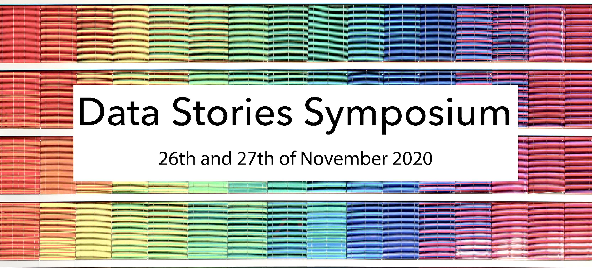

I am a postdoctoral researcher at the University of Vienna in the Research Group for Visualization and Data Analysis (Computer Science) and an affiliate researcher at King’s College London, UK.
My research is looking at ways to improve human-data interaction by studying sensemaking with data and visualisations, data discovery and reuse, and ethical and collaborative aspects of data-centric work.
In other words that means I research how data is used, understood, and presented by (and to) different user groups and what implications that might have.
laura.koesten (at) univie.ac.at


Publications
International Journal for Human Computer Studies
Laura Koesten, Kathleen Gregory, Paul Groth, Elena Simperl
Cell Press Journal
Laura Koesten, Pavlos Vougiouklis, Elena Simperl, Paul Groth
CHI'19 Conference on Human Factors in Computing Systems
Laura Koesten, Emilia Kacprzak, Jeni Tennison, Elena Simperl
Laura Koesten
Everything you always wanted to know about a dataset: studies in data summarisation International Journal for Human Computer Studies
Laura Koesten, Elena Simperl, Tom Blount, Emilia Kacprzak, Jeni Tennison
International Journal on Very Large Data Bases
Adriane Chapman, Elena Simperl, Laura Koesten, George Konstantinidis, Luis-Daniel Ibez-Gonzalez, Emilia Kacprzak, Paul Groth
Journal of Web Semantics
Emilia Kacprzak, Laura Koesten, Luis D Ibáñez, Tom Blount, Jeni Tennison, Elena Simperl
2018, The Web Conference (WWW'18) PhD
Laura Koesten
2018, The Web Conference (WWW'18) Companion
Emilia Kacprzak, Laura Koesten, Jeni Tennison, Elena Simperl
2017, CHI'17 Conference on Human Factors in Computing Systems
Laura Koesten, Emilia Kacprzak, Jeni Tennison, Elena Simperl
2016 — CHIIR 2017 Workshop on Supporting Complex Search Tasks
Laura Koesten, Jaspreet Singh
2016 — PROFILES@ ESWC
Emilia Kacprzak, Laura Koesten, Tom Heath, and Jeni Tennison
2016 — SAL@SIGIR 2016
Laura Koesten, Emilia Kacprzak and Jeni Tennison
2015 — Ergonomics & Human Factors
Laura Koesten, Diane Gyi, Annabel Masson
Talks
Title: Visualizing Data ‑ Through the Eyes of the Reader
Vienna, Austria
202X
Title: Can you see the message?
Vienna, Austria
2023
Title: Visualizing data - Through the eyes of the reader
Vienna, Austria
2023
Title: Dataset reuse: Toward translating principles to practice
2023
Title: Data Discovery and Reuse: A Human‑Centred View
NYC, US
2023
Title: The Data Stories Project + Data visualisation (a primer)
Vienna, Austria
2022
Title: Talking Charts
Vienna, Austria
2022
Title: Visualizing data through the eyes of the reader
Vienna, Austria
2022
Title: Human Data Interaction
Vienna, Austria
2021
Title: Online Teamwork: Social factors in digital communities
Vienna, Austria
2021
Title: Dataset reuse indicators: perspectives of data consumers and data producers
Tsukuba, Japan
2020
Title: Studies in Human Data Interaction - Data Discovery, Sensemaking and Reuse, June 2020
Online (UK)
2020
Title: User centred data discovery, data sharing and reuse
London, UK
2020
Title: A user centred perspective on the discovery of structured data.
Vienna, Austria
2019
Title: Data discovery from a user perspective. Den Haag, Netherlands 2019
Lunchtime lecture at The Open Data InstituteTitle: Why can‘t I find data?
London, UK
2018
Title: Finding data on the web
London, UK
2018
Community engagement & organisation
EU Horizon 2020 Research and Innovation programme
- Datastories Symposium 2020
King's College London

ESWC 2020
ESWC 2019
International Semantic Web Conference, ISWC 2018
Int. Workshop on Profiling and Searching Data on the Web
@ The Web Conference 2018, Lyon, FR
Int. Workshop on Profiling and Searching Data on the Web
@ The Web Conference 2018, Lyon, FR
International Workshop on DATA:SEARCH
@ SIGIR 2018, Ann Arbor, USA
Teaching
Data Visualization, Contributor to the Cognitive Science Lecture Series, Supervision
Summer 2024:
Human Computer Interaction, Data Visualization, Supervision
Winter 2023:
Data Visualization, Contributor to the Cognitive Science Lecture Series, Supervision
Summer 2023:
Human Computer Interaction, Supervision
Winter 2022:
Data Visualization, Contributor to the Cognitive Science Lecture Series, Supervision
Summer 2022:
Human Computer Interaction, Data Visualization, Supervision
Winter 2021:
Data Visualization, Contributor to the Cognitive Science Lecture Series, Supervision
Summer 2021:
Human Computer Interaction, Supervision
Projects
Current
Collaboration
Past
Data Stories - Engaging with data in a post-truth environment
King's College London, University of Southampton, The ODI
TheyBuyForYou - Enabling procurement data value chains
University of Southampton